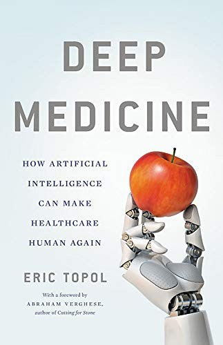
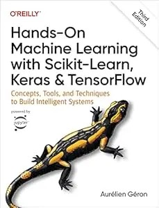

Currently
Open to full-time roles in medical data engineering, ML engineering, or applied data science, and willing to relocate within Europe.
Learning
Reading

The most widely read book in medical AI: Topol's case for how AI reshapes diagnosis, imaging, and drug discovery, and what the technology can and can't do in clinical practice.

On what it means to build ML systems that do what we actually want. Relevant not just to safety but to any high-stakes deployment.

The practical standard for bridging theory and implementation: Scikit-Learn, Keras, TensorFlow end to end.
Building
A book app I'm building in phases. Right now: search, a reading shelf, and ratings. The longer goal is a recommendation layer that learns from those ratings over time and builds a taste profile, something that can describe what your reading has in common, not just suggest more of the same. Movies next.
Thinking About
How much can generative models reduce the annotation bottleneck in rare-disease imaging without introducing systematic bias?
Synthetic data for rare clinical conditionsThe gap between a model that works on a dataset and one that a surgeon would trust in a workflow: regulation, uncertainty quantification, interpretability.
What makes a pipeline clinically deployable